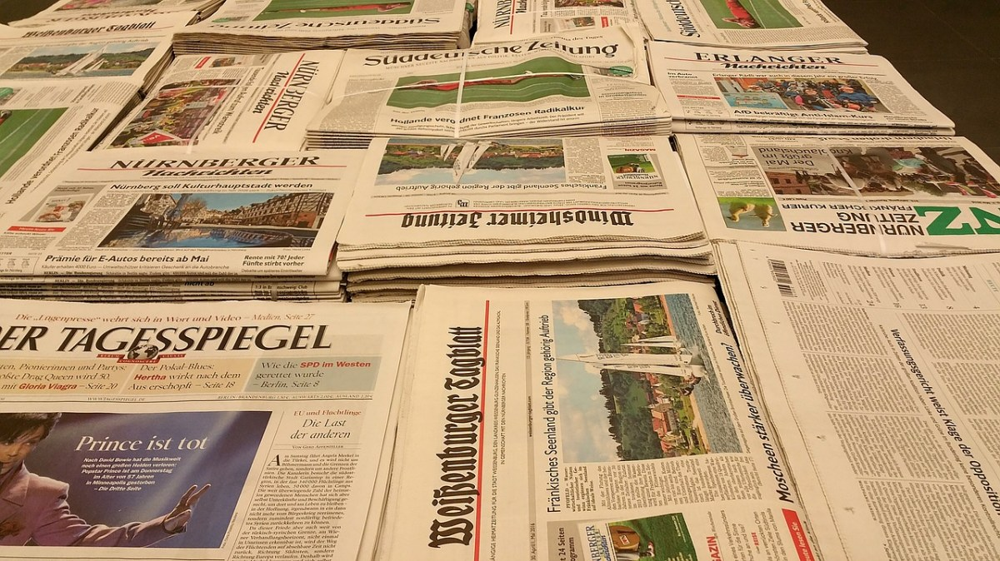

首页
服务
案例
联系
关于我们
新闻学是一门研究新闻传播和新闻行业运作的学科领域。它涵盖了新闻报道、新闻写作、新闻编辑、新闻传播理论等内容。新闻学旨在探讨新闻的产生、传播和影响，以及新闻媒体在社会中的角色和责任。 新闻学研究新闻如何报道事实、传递信息、引导舆论，以及新闻媒体如何运作、如何影响公众和社会。新闻学通过新闻伦理、传播规范、新闻价值观等方面的研究，探讨新闻行业的发展趋势和社会影响。 随着信息技术的快速发展和传播方式的多样化，新闻学也在不断演进和变革，涌现出数字新闻、多媒体新闻、数据新闻等新领域和新形式。新闻学不仅关注传统媒体如报纸、电视、广播的运作，也关注社交媒体、网络新闻等新兴媒体的发展。 新闻学在现代社会中扮演着重要角色，作为信息传递的桥梁和社会监督的力量，影响着公众的认知和社会的发展。新闻学的研究和实践有助于提升新闻专业人士的素养和能力，促进新闻行业的规范和发展。

返回顶部
了解更多
想要了解更多有关WORKESSAY业务范围、服务水平、订购流程、活动优惠等信息可随时联系在线客服，如有任何疑问我们都将为您悉心解答。
联系方式
微信: 745446932
QQ: 745446932
邮箱: 745446932@qq.com